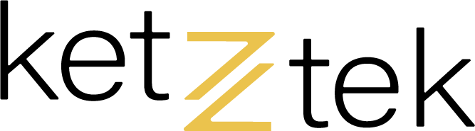
A design proposal: how the site could look, read and work, built around your own logo and your own words.
Proposal
Website design
Atlant Pro Max
November 2026
Your feedback
02 · The job
Plant, site and operations managers in industry and construction, often on a phone between two other things.
In a few seconds: what you do, for whom, and where. Analysis, automation and custom software, from Winterthur, across Switzerland.
One clear next step: the free 30-minute call, on the first screen of every main page. Writing a message is the quiet alternative.
Practical, honest and sized to the problem, like the way you work.
03 · The idea
Your clients live with reports: the Regierapport, the Bautagebuch, the Mängelliste. The design borrows their order.
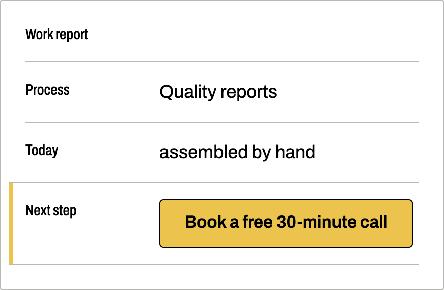
The signature of the site: a short work report on the first screen. Its last line holds the real booking button.
04 · Colour and type
Ink #000000
All text
Paper #ffffff
Sheets
Desk #eeeeeb
Page background
Note #55554f
Secondary text
Marker #ebc34d
The logo's yellow: the next step only
Headlines: Archivo, wide and bold
Aa
Strong and clear, even on a small screen.
Text: Archivo, normal width
Aa
17 px on phones, 18 px on desktop.
Labels: Archivo, narrow
Aa
Like the field names on a form.
05 · Home
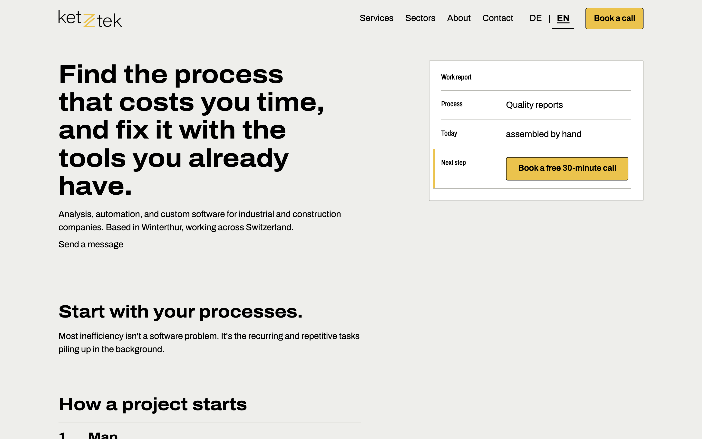
Desktop, 1440 px
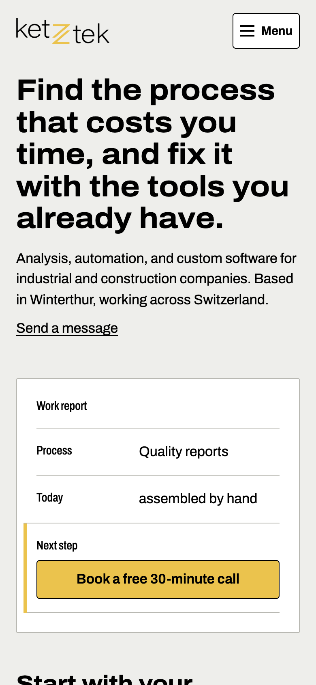
Phone, 390 px
Headline, intro and the booking button are visible without scrolling, on desktop and on the phone.
Plain words from your current site, no slogans.
The logo once, at the top, at a size that reads.
06 · Home, further down
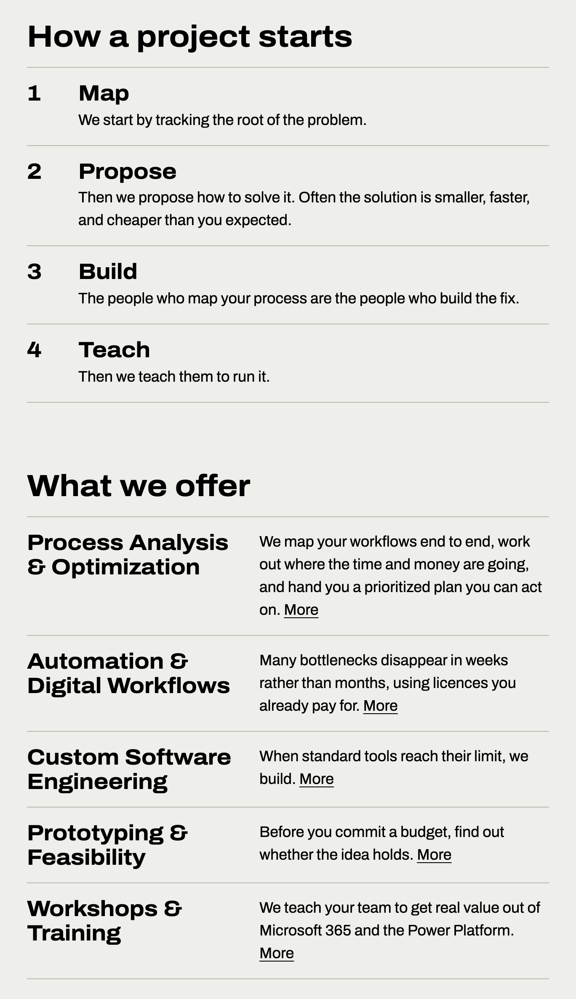
The four steps of a project, the five services, the two sectors and the reasons to work with you each read as lines in a report: easy to scan, nothing to decode.
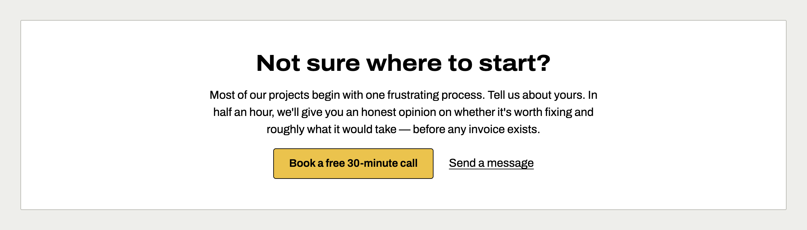
Every page ends with the same calm invitation to talk.
07 · Service page: Automation & Digital Workflows
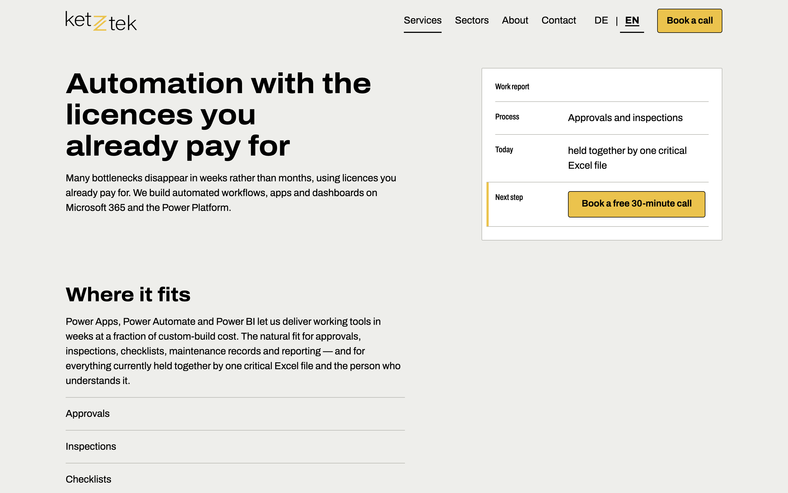
Desktop, 1440 px
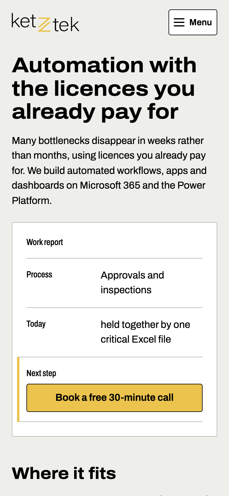
Phone, 390 px
The report names a typical case: approvals and inspections, held together by one critical Excel file.
Then where it fits, what Microsoft 365 can carry, and how a project runs.
08 · Contact
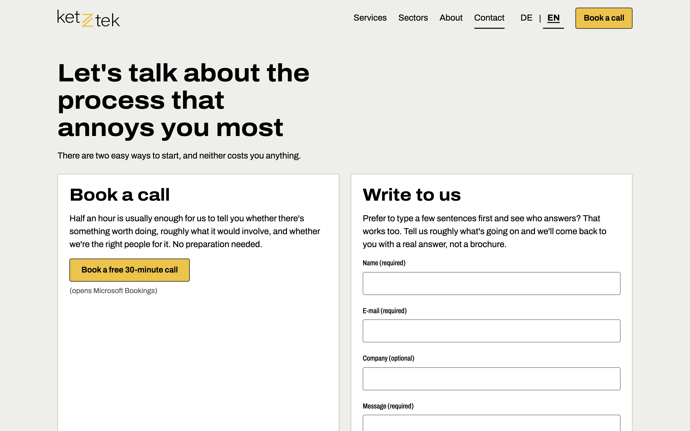
Book a call through your Microsoft Bookings, or write a few sentences first.
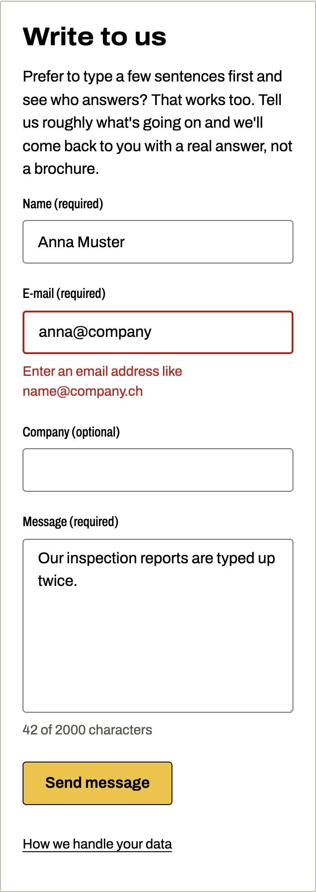
Messages say what to do, right where the problem is.
09 · On the phone
Most visitors will meet you on a phone. Large type, a menu that is easy to hit with a thumb, and the booking button at the bottom of the menu, always one tap away.
Home
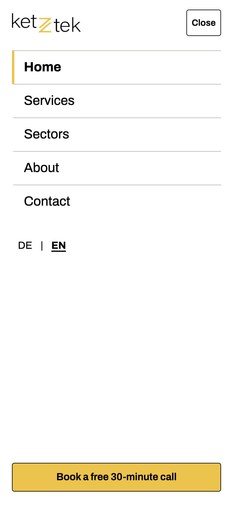
Menu
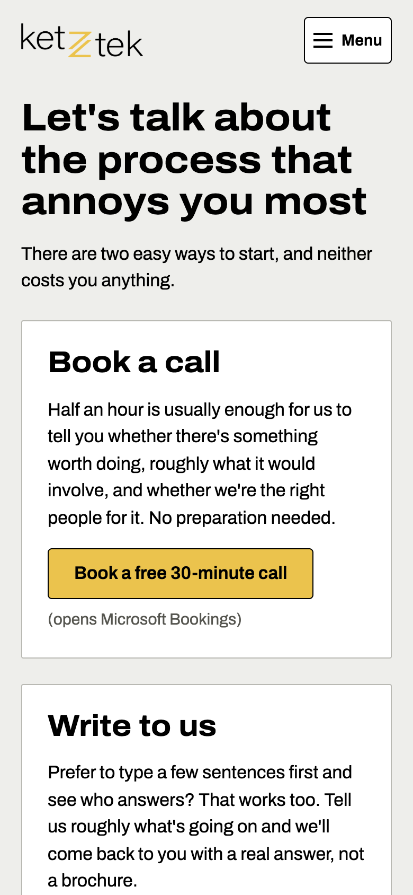
Contact
10 · Under the surface
Text contrast meets the WCAG 2.2 AA standard on every page. Lines stay short enough to read comfortably.
Every button and link is large enough for a thumb, and fully usable with a keyboard.
Fonts come from your own site, not from Google, and the site loads no tracking scripts.
No stock photos, no heavy scripts, no framework, so every page stays small.
Separate pages for each language, with a DE | EN switch on every page.
The free call is one tap from every page, through the Microsoft Bookings you already use.
11 · Next steps
What we need from you
Headlines shown here are our suggestions, built from your current site. We agree the final wording with you.